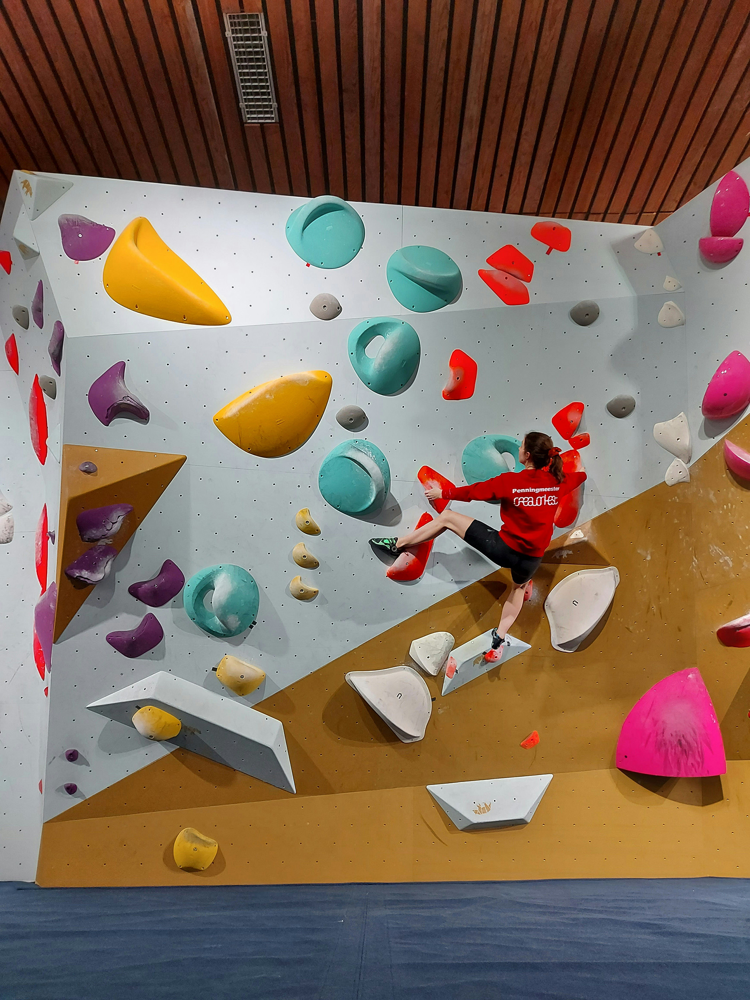
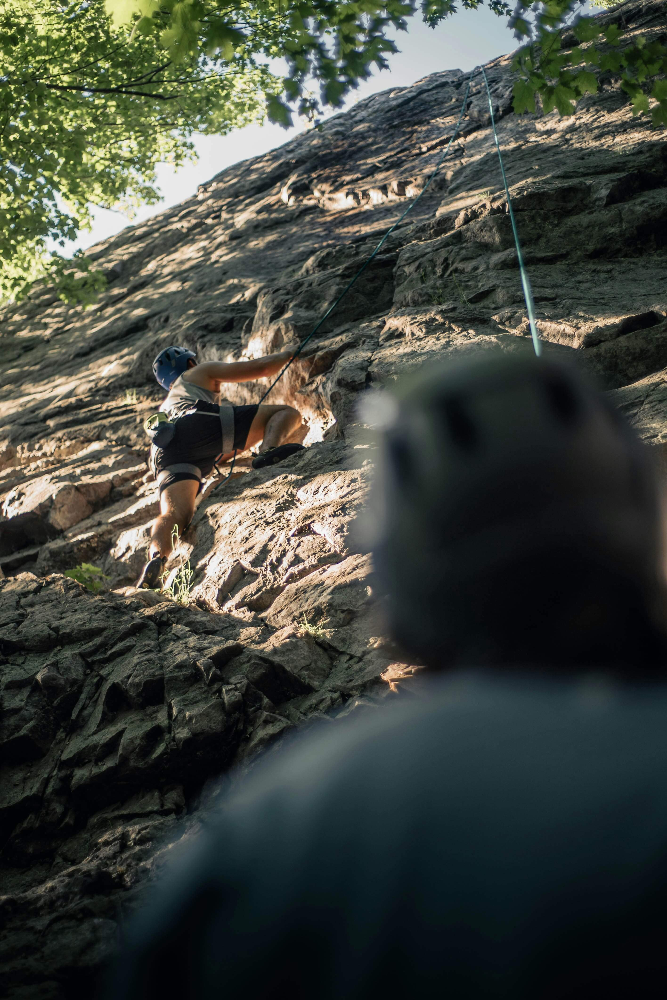

Our featured lessons lay out the foundation of healthy, optimal climbing techniques and methods.
We compile highly rated and staff-reviewed lessons and resources for your optimal climbing progress. Video lessons and recommendations are categorized into three primary categories, labeled as beginner, intermediate, and advanced.
We intend for this to be a general organizational structure and not a strict limiation. Climbing experiences and development will vary widely between individuals, and any resources which prove beneficial should be celebrated. If you would like to submit materials for review, link them in our contact portal and they could be featured on Chalkbag!
Climbing Grade Conversion Charts
A variety of grading systems exist to help climbers identify and communicate about the difficulty of a given route. There is no one definitive grading method, instead climbers and routesetters aggregate grades after sending routes and the rating can change over time. Factors like a climber's height, weight, preferred climbing style, and equipment can all impact the real or perceived difficulty of a given route. Rather than understanding grades as objective metrics, our staff at Chalkbag recommends that grades are looked at as a useful but non-essential tool for personal development and interpersonal communication. These rating charts represent a general and current approximation of the relative values for various scales compared to one another. As climbers continue to push the boundaries of the sport, additional grades continue to be adjusted and added.

| Bouldering Grades | ||
|---|---|---|
| V-Scale | Font | Typical Difficulty |
| VB | 3 - 4 | Very Easy (First day climbing) |
| V0 | 4+ - 5 | Easy (First few sessions) |
| V1 | 5+ | Moderate (1-3 months) |
| V2 | 6A - 6A+ | Moderate (3-6 months) |
| V3 | 6B | Intermediate (6-12 months) |
| V4 | 6C - 6C+ | Intermediate (1-2 years) |
| V5 | 7A | Advanced (2-3 years) |
| V6 | 7A+ | Advanced (2-3 years) |
| V7 | 7B - 7B+ | Strong (3-5 years) |
| V8 | 7C | Very Strong (3-5 years) |
| V9 | 7C+ | Elite (5+ years) |
| V10 | 8A | Elite (5+ years) |
| V11 | 8A+ | Professional (Many years) |
| V12 | 8B | Professional (Many years) |
| V13-V17 | 8B+ - 9A+ | World-Class (Elite athletes) |

| Sport Climbing Grades | ||
|---|---|---|
| YDS | French | Typical Difficulty |
| 5.4 | 3 | Very Easy (First day climbing) |
| 5.5 | 4a | Easy (First month) |
| 5.6 | 4b - 4c | Moderate (1-3 months) |
| 5.7 | 5a | Moderate (3-6 months) |
| 5.8 | 5b | Intermediate (6-12 months) |
| 5.9 | 5c | Intermediate (6-12 months) |
| 5.10a | 6a | Intermediate (1-2 years) |
| 5.10b | 6a+ | Intermediate (1-2 years) |
| 5.10c | 6b | Intermediate (1-2 years) |
| 5.10d | 6b+ | Advanced (2-3 years) |
| 5.11a | 6c | Advanced (2-3 years) |
| 5.11b | 6c+ | Advanced (2-3 years) |
| 5.11c | 7a | Advanced (3-5 years) |
| 5.11d | 7a+ | Advanced (3-5 years) |
| 5.12a | 7b | Advanced (3-5+ years) |
| 5.12b | 7b+ | Very strong (5+ years) |
| 5.12c | 7c | Very strong (5+ years) |
| 5.12d | 7c+ | Elite (many years) |
| 5.13a | 8a | Elite (many years) |
| 5.13b | 8a+ | Elite (many years) |
| 5.13c | 8b | Professional (Elite athletes) |
| 5.13d | 8b+ | Professional (Elite athletes) |
| 5.14a - 5.15d | 8c - 9c | World-Class (Top 0.1% globally) |